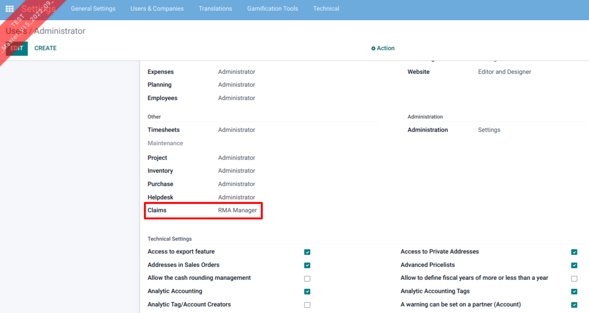
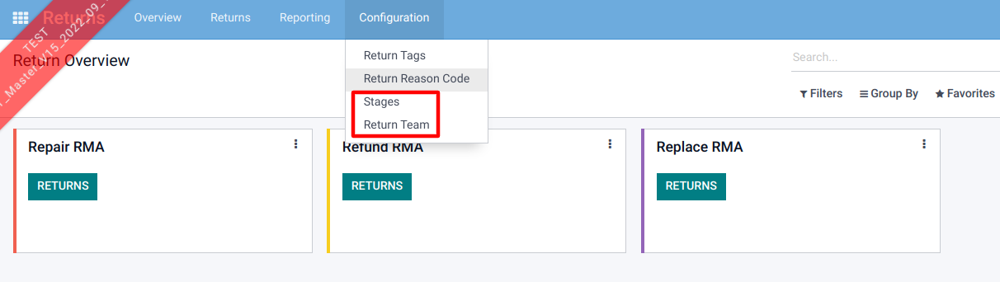
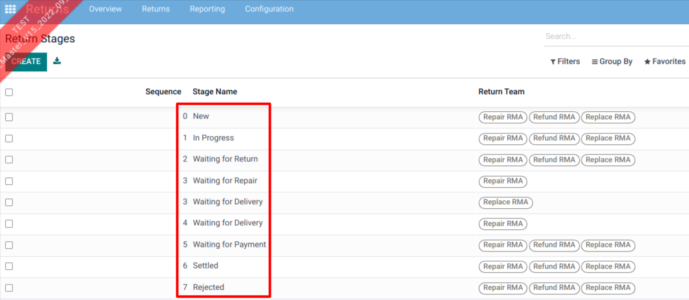
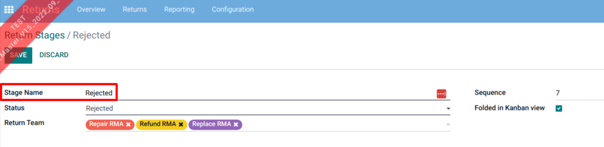
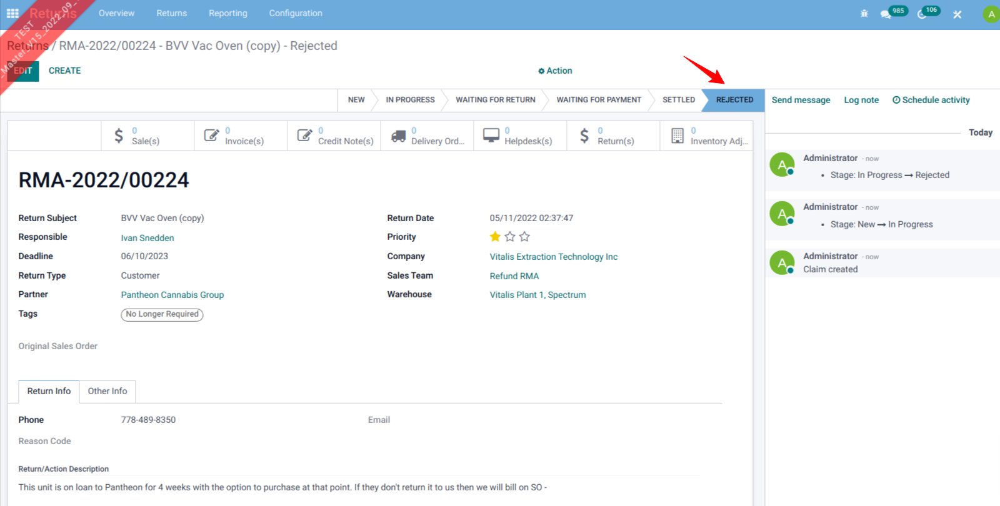
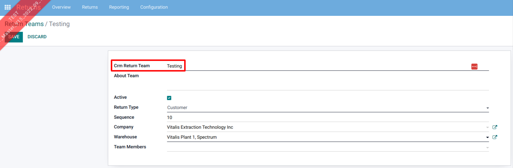
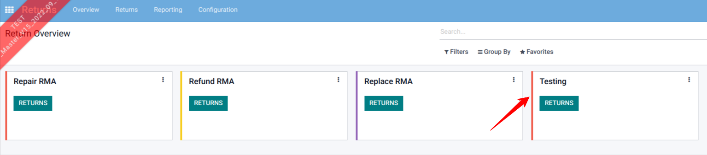
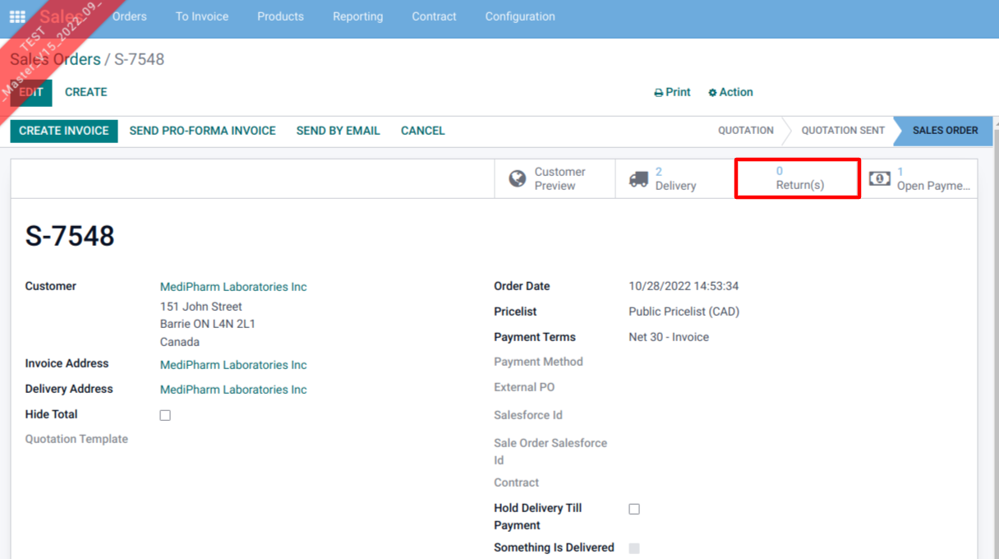
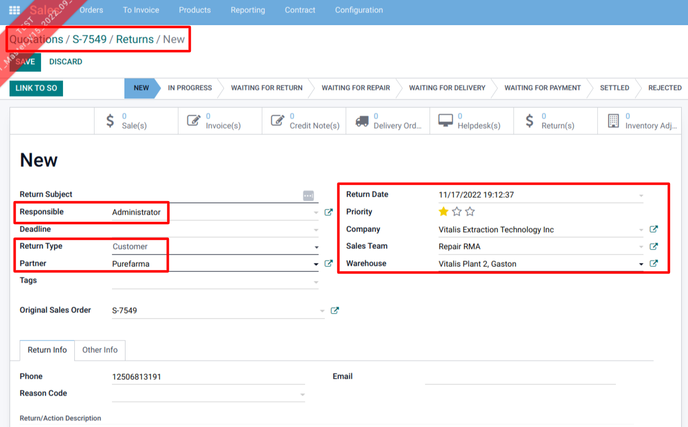

<section class="container">
    <div class="row">
        <div class="col-md-offset-1 col-md-8 mb64 mt64">
            <div>
                <h1 class="display-5 font-weight-bold">Returns Management</h1>
                <h2 class="font-weight-bold">Description</h2>
                Odoo Return Merchandise Authorization (RMA) is the tool that essentially streamlines the process of processing returns and exchanges in our Odoo store.<br/><br />
                A unique RMA is assigned to each returned product for tracking, testing and authorizing appropriate action to better serve the customer.
            </div>
            <div><br />
                <h2 class="font-weight-bold">Functionality</h2>
                In the setting, we have access rights for RMA (User & Manager).
                <div class="oe_mb32 oe_demo oe_picture oe_screenshot">
                    
                </div>
                To use this module, we need to configure the Stage & Return Team.
                 <div class="oe_mb32 oe_demo oe_picture oe_screenshot">
                    
                </div>
                <div class="oe_mb32 oe_demo oe_picture oe_screenshot">
                    
                </div>
                The format for forming the return team should be configured as shown in the image below.
                <div class="oe_mb32 oe_demo oe_picture oe_screenshot">
                    
                </div><br /><br />
                <div class="oe_mb32 oe_demo oe_picture oe_screenshot">
                    
                </div>
                In the example below, we have created a new return team (Testing). 
                When a return is made, you need to select which warehouse to send it to.
                Also, you may select team members and assign that return to them. 
                <div class="oe_mb32 oe_demo oe_picture oe_screenshot">
                    
                </div>
                The newly configured return team will now be listed on the dashboard of the Returns module for easy access. 
                Now you can easily create the return form by clicking the return button listed on the individual return team.
                <div class="oe_mb32 oe_demo oe_picture oe_screenshot">
                    
                </div>
                Here you may view all existing returns applicable to the related sales order or create a new one. 
                <div class="oe_mb32 oe_demo oe_picture oe_screenshot">
                    
                </div>
                When you create the return from the sale order, it automatically propagates the partner name, SO Number, Return type and some of the other relevant fields propagate from the sale order.
                <div class="oe_mb32 oe_demo oe_picture oe_screenshot">
                    
                </div>
            </div>
            <br />
            <div>
                <h2 class="font-weight-bold">Credits</h2>
                <h4 class="font-weight-bold">Contributors</h4>
                <li>Sodexis &lt;<a href="mailto:apps@sodexis.com">apps@sodexis.com</a>&gt;</li><br />
                This module is maintained by Sodexis.<br />
            </div>

        </div>
    </div>
</section>